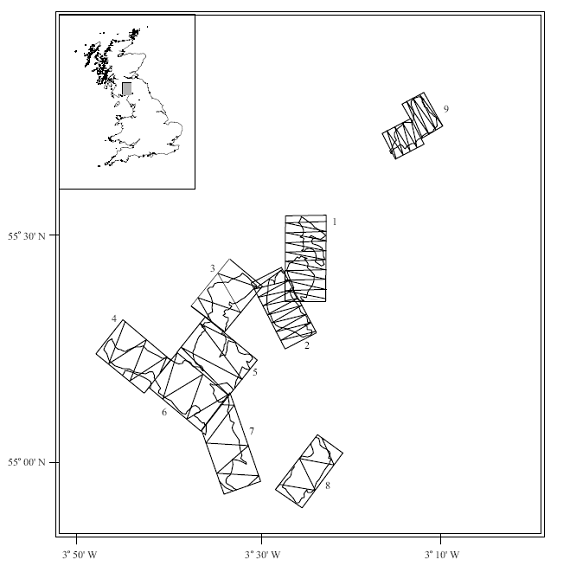
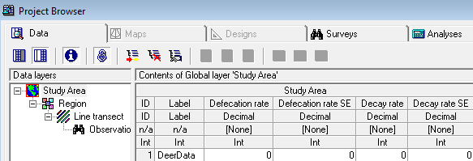
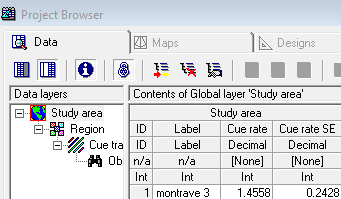
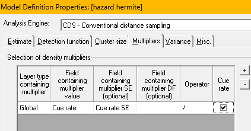

Analysis with the use of multipliers
Distance for Windows exercise
Sika deer survey
The question is how to estimate of the density of sika deer (Cervus nippon) in a number of woodlands in the Scottish Borders. These animals are quite shy and often will be alert to the presence of an observer before the observer detects them, making surveys of the deer challenging. As a consequence, indirect estimation methods have been applied to this problem. In this manner, an estimate of density is produced for some sign generated by deer (faecal pellets) and this estimate is transformed to density of deer by
\[\hat{D}_{\text{deer}} = \frac{\frac{\hat{D}_{{\text{pellet group}}}}{\text{mean time to decay}}}{\text{dung production rate (per animal)}} = \frac{\text{dung deposited daily}}{\text{dung production rate}}\]
We will produce a pellet group density estimate, then adjust it accordingly to account for the deposition and decay processes operating during the time the data are being acquired. We will also take uncertainty in the production and decay rates into account in our final estimate of deer density. The complete study is described in Marques et al. (2001).
The Data
 Data from 9 woodlands were collected and reside in the Distance for Windows project Deer pellets.zip The design of the survey is shown at right (note differing amounts of effort in different woodlands based on information derived from pilot surveys).
In addition to these data, we also require estimates of the defecation rate. From a consultation with the literature, we learn that sika deer deposit 25 pellet groups daily. The literature source did not provide a measure of variability of this estimate. During the course of our surveys we also followed the fate of some marked pellet groups to estimate the disappearance (decay) rates of a group. A thorough discussion of methods useful for estimating decay rates and associated measures of precision can be found in Laing et al. (2003).
There are many factors that might influence both deposition and decay rates, and for purposes of this exercise we will make the simplifying assumption that decay rate is homogeneous across these woodlands; with their mean time to decay of 163 days and a standard error of 13 days. However if you were to conduct a survey such as this, you would want to investigate this assumption more thoroughly.
Analysis Exercises
Use the Distance project Deer pellets.zip for the following analyses.

- Adjust the multipliers in the project found in the Global layer of the data tab (see screen capture at right). Replace the place-holders in the project, with values provided in the previous section of this exercise.
- Fit the usual series of models (uniform, half normal, and hazard rate) models to the data.
- Select the Multipliers button in the Model Definition Properties to specify the layer and the field in the project database for the multipliers you wish to employ (along with their measure of precision).
- Produce estimates using the woodland as strata, pooling data across strata for fitting the detection function, but using woodland-specific encounter rate to produce woodland-specific estimates of density.
- Produce an overall estimate of density as mean of woodland-specific densities weighted by the effort allocated within each woodlot.
- Make special note of the components of variance (contribution of detection function, encounter rate, decay rate, and what happened to defecation rate component?) in each of the strata.
Buckland’s wren cue count
As part of the songbird survey conducted by Prof. Buckland (Buckland, 2006), he carried out a cue count survey for the species of interest. In this exercise, you will use the radial distances to detections of wren songs (Troglodytes troglodytes), from the 32 point count stations, in conjunction with Prof. Buckland’s estimate of cue production rate to estimate density and abundance of wrens in his 33ha study area.
Effort for cue count surveys is recorded in time units. For Buckland’s survey each visit to a point was 5 minutes in duration, but each point was visited twice. Hence the field Search effort associated with each point records 10 minutes of effort. The measurement of cue production rate (next paragraph) must also respect the units of measure of effort.
 The project Wren3.zip contains the detections as well as the rate at which birds produce songbursts (1.4558 bursts min-1) with a standard error of 0.2428. This standard error is a measure of variability between individual wrens. Note the cue production rate multiplier is stored in the Distance for Windows project in the Global Layer of the data sheet (right).
 Your task is to fit detection function models to the wren point transect data and appropriately apply the multiplier to convert song density into wren density. Prof Buckland in his paper (Buckland, 2006) used a truncation distance for this data set of 92.5m. See screen shot of Multipliers tab of the Model Definition Properties (left).
Note the goodness of fit of your chosen model.